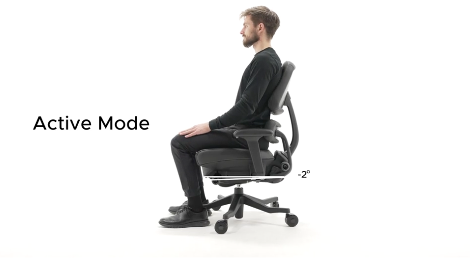

–2° | Active Mode
Best For:
- High-focus tasks
- Upright sitters
- Short, intense work periods
What It Does:
Puts you slightly forward, ideal for precision work without collapsing posture.

Best For:
What It Does:
Puts you slightly forward, ideal for precision work without collapsing posture.